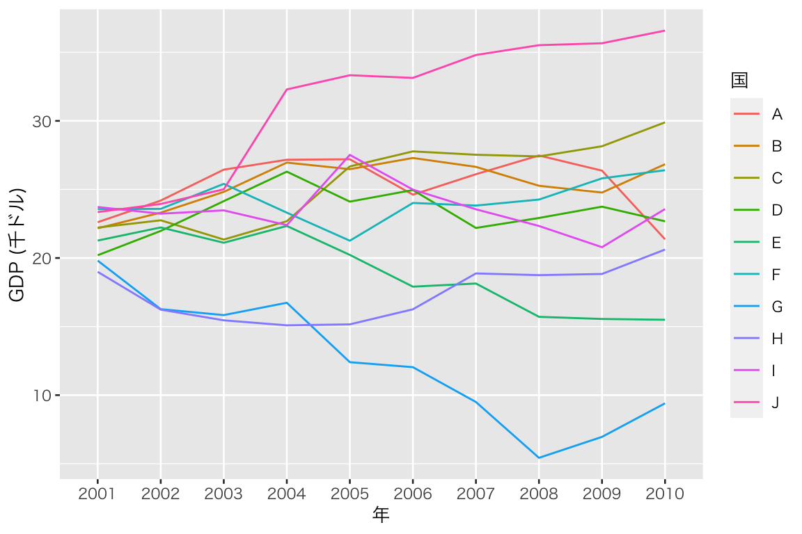
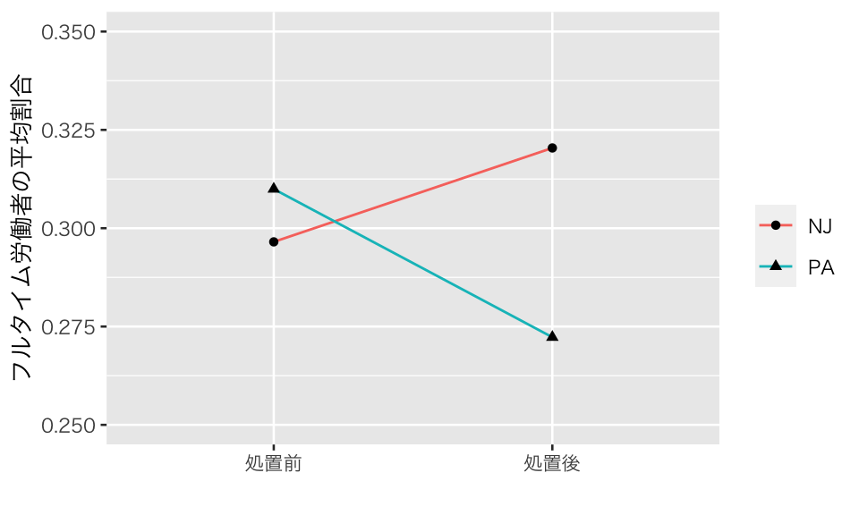
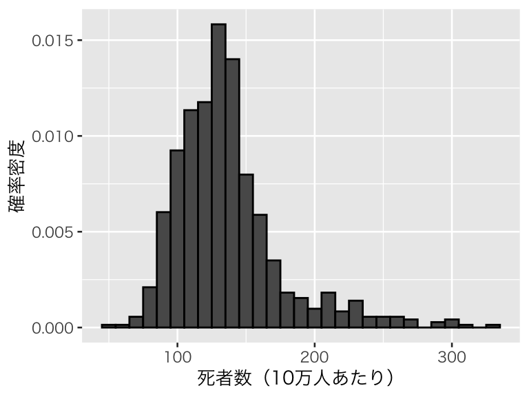
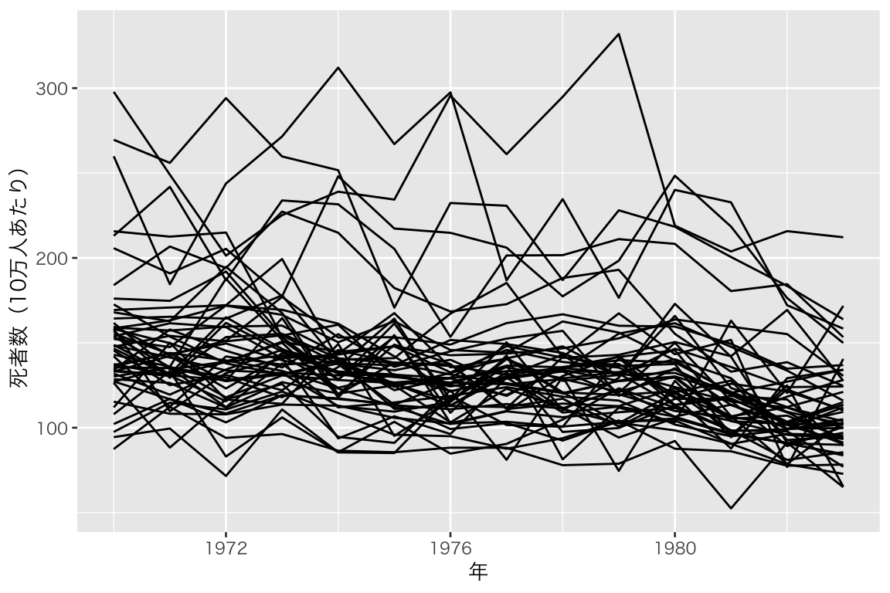
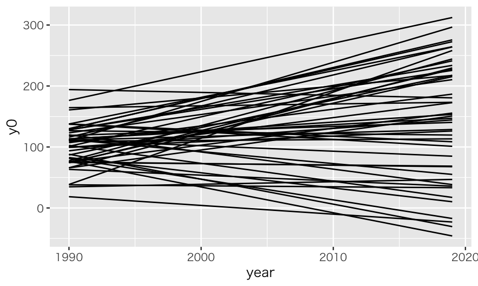
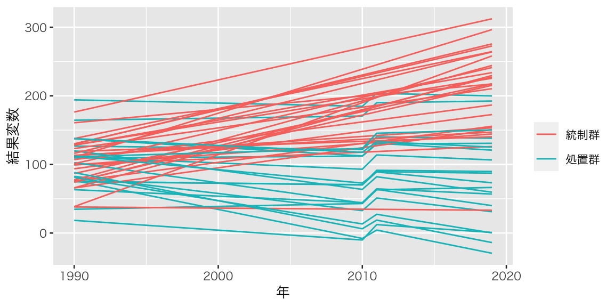
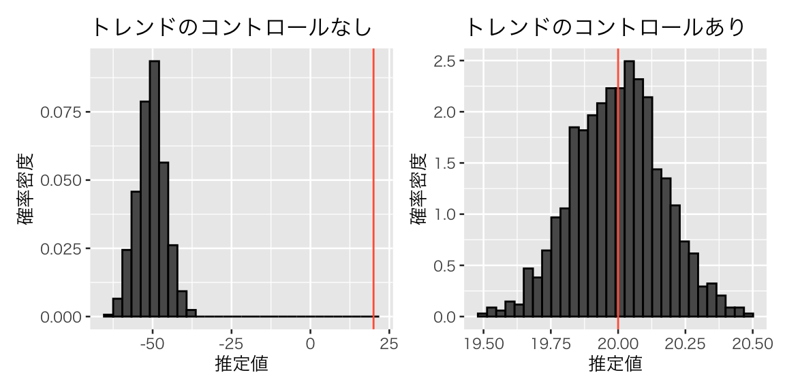

Topic 6 差分の差分法
- トピック6の講義スライド (PDF, 975KB)
6.1 準備
6.1.1 予習、講義動画、実習課題
このトピックでやるべきことは、以下のとおりである。
- シラバス(PDFファイル) に記載されているトピック6の予習課題を読む。
- KUTLMS (Moodle) にあるトピック6の講義動画を視聴する。
- この資料の続きを読み、Rを使った実習を行うことで、差分の差分 (DID) 法の使い方を学ぶ。
- 教科書 (安井 2020) 第4章のRを使った分析を自分でやってみる（ただし、CausalImpactを使った分析はやらなくても良い）。
- 課題を提出する（選択制）。
6.1.2 Rパッケージの読み込み
必要なパッケージを読み込み、作図用の日本語フォントを設定する。
pacman::p_load(tidyverse, broom, estimatr, haven, DT, patchwork)
theme_set(theme_gray(base_size = 10, base_family = "HiraginoSans-W3")) # macOS用
#theme_set(theme_gray(base_size = 10, base_family = "Meiryo")) # Windows用
#theme_set(theme_gray(base_size = 10, base_family = "IPAGothic")) # Ubuntu用
#showtext::showtext_auto() # Cloud用
#theme_set(theme_gray(base_size = 10, base_family = "noto")) # Cloud用6.1.3 このトピックで使うRコードの説明
6.1.3.1 dplyr::pivot_longer()
横長 (wide) フォーマットのデータを縦長 (long) に変換するために、dplyr::pivot_longer() を使う。
まず、例として使う横長データを作る。作り方に特に意味はない（現実のデータ生成過程をモデル化しているわけではないので注意）。
wide <- tibble(
country = LETTERS[1:10],
GDP2001 = rnorm(10, mean = 20, sd = 3)) %>%
mutate(GDP2002 = GDP2001 + rnorm(10, mean = 0, sd = 2),
GDP2003 = GDP2002 + rnorm(10, mean = 0, sd = 2),
GDP2004 = GDP2003 + rnorm(10, mean = 0, sd = 2),
GDP2005 = GDP2004 + rnorm(10, mean = 0, sd = 2),
GDP2006 = GDP2005 + rnorm(10, mean = 0, sd = 2),
GDP2007 = GDP2006 + rnorm(10, mean = 0, sd = 2),
GDP2008 = GDP2007 + rnorm(10, mean = 0, sd = 2),
GDP2009 = GDP2008 + rnorm(10, mean = 0, sd = 2),
GDP2010 = GDP2009 + rnorm(10, mean = 0, sd = 2))
dim(wide)## [1] 10 11これで10行11列の横長データができた。
このデータフレームは、AからJまでの10か国について、2001年から2010年までのGDPの値を記録しているので、国-年パネルデータ (country-year panel) である。（上の表では横幅の都合でGPD2007までしか見えないので、console に View(wide) と入力して全体を確認されたい。）
しかし、パネルデータは横長だと使いにくい。例えば、このままだと ggplot() でGDPの時系列グラフを作るのが難しい。そこで、pivot_longer() で縦長のデータフレームに変換する。
縦長にする際には、どの列を1列にまとめるかをcols で指定する。この例では、GDPxxxx を1つの列にまとめたいので、cols = starts_with("GDP") とする。starts_with("GDP") は、変数名が “GDP” から
始まるものという意味である（他に、ends_with() や contains() などがある）。この例の場合には、まとめたい変数が順番に並んでいるので、順番の最初 (GDP2001)と最後 (GDP2010) を使って、cols = GDP2001:GDP2010 とすることもできる。あるいは、country 以外の列は全部まとめるので、cols = -country としても良い。
次に、元々どの列にあったのかを区別する変数の名前を names_to で指定する。この例では、GDPが年 (year) によって区別されているので、names_to = "year" とする。“year” の部分は自分で選べるので、“nen” や “toshi” にしてもコードは動く（おすすめはしない）。このまま何も指定しないと、新しい縦長のデータで変数 year の列に入る値は、“GDP2001”, “GDP2002”, \(\dots\) になる。年を表すのに “GDP”の部分は必要ないので、names_prefix = "GDP" を指定する。こうすると、year 列の値は、元の列名（変数名）の冒頭から “GDP” を取り除いた値、つまり、2001, 2002, \(\dots\) になる。
最後に、GDPの値を保存する列の名前を values_to で指定する。ここでは、新たな列名を “gdp” にするため、values_to = "gdp" と指定する。
以上の内容を、以下のように実行する。
long <- wide %>%
pivot_longer(cols = starts_with("GDP"),
names_to = "year",
names_prefix = "GDP",
values_to = "gdp")これで横長データを縦長データに変換することができた。
## [1] 100 3100行3列の縦長データになっていることが確認できる。（授業で説明したとおり、これよりも縦長にすることもできる。できるだけ長くすれば良いというものではない。）
縦長のパネルデータは、ggplot() で簡単に図にすることができる。
p0 <- ggplot(long, aes(x = year, y = gdp, group = country)) +
geom_line(aes(color = country)) +
labs(x = "年", y = "GDP (千ドル)") +
scale_color_discrete(name = "国")
plot(p0)
6.1.3.2 dplyr::across()
これまでの授業でも、dplyr::summarize() は利用してきた。最近のdplyrのアップデートにより、acorss() という便利な関数が使えるようになったので、利用する。
これを使うには、dplyr のバージョンを1.0.0 （以降）にする必要がある。バージョンは、packageVersion("dplyr") で確認できるので、古いバージョンを使っていてアップデートしたい場合は、update.packages("dplyr") を実行する。
上で作った wide と long を使って説明する。 例えば、各年のGDPについて10か国の平均を求めたい場合、縦長データだと、
## # A tibble: 10 x 2
## year mean_gdp
## <chr> <dbl>
## 1 2001 21.8
## 2 2002 21.8
## 3 2003 22.3
## 4 2004 23.5
## 5 2005 23.4
## 6 2006 23.3
## 7 2007 23.1
## 8 2008 22.5
## 9 2009 22.7
## 10 2010 23.3として求められる。
across() を使うと、データフレーム内の複数列にわたって変数を要約することができるので、横長データでも年ごとのGDPの平均値を求められる。
.col で対象となる列を指定し（指定の方法は、上の pivot_longer() の説明を参照）、.fns で適用する関数を指定する。ここでは、mean() で平均値を求める。
## # A tibble: 1 x 10
## GDP2001 GDP2002 GDP2003 GDP2004 GDP2005 GDP2006 GDP2007 GDP2008 GDP2009
## <dbl> <dbl> <dbl> <dbl> <dbl> <dbl> <dbl> <dbl> <dbl>
## 1 21.8 21.8 22.3 23.5 23.4 23.3 23.1 22.5 22.7
## # … with 1 more variable: GDP2010 <dbl>このように、各列の要約統計量を求めることができる。値は long を元に計算したものと同じであることが確認できる。
さらに、この例の場合には、country が character（文字列）型、GDPの値が numeric（数値）型なので、where() を使って次のように書くことができる。
## # A tibble: 1 x 10
## GDP2001 GDP2002 GDP2003 GDP2004 GDP2005 GDP2006 GDP2007 GDP2008 GDP2009
## <dbl> <dbl> <dbl> <dbl> <dbl> <dbl> <dbl> <dbl> <dbl>
## 1 21.8 21.8 22.3 23.5 23.4 23.3 23.1 22.5 22.7
## # … with 1 more variable: GDP2010 <dbl>一度に2種類以上の要約を行うこともできる。その場合は、名前付きリスト (named list) を以下のように使う。
## # A tibble: 1 x 20
## GDP2001_med GDP2001_sd GDP2002_med GDP2002_sd GDP2003_med GDP2003_sd
## <dbl> <dbl> <dbl> <dbl> <dbl> <dbl>
## 1 22.2 1.66 23.0 2.99 23.8 3.89
## # … with 14 more variables: GDP2004_med <dbl>, GDP2004_sd <dbl>,
## # GDP2005_med <dbl>, GDP2005_sd <dbl>, GDP2006_med <dbl>, GDP2006_sd <dbl>,
## # GDP2007_med <dbl>, GDP2007_sd <dbl>, GDP2008_med <dbl>, GDP2008_sd <dbl>,
## # GDP2009_med <dbl>, GDP2009_sd <dbl>, GDP2010_med <dbl>, GDP2010_sd <dbl>リストで使った名前が、列名を区別するのに使われていることがわかる。
dplyr パッケージ全般についての詳細は、宋ジェヒョン先生による「dplyr入門（新版）」を参照されたい。
6.2 最低賃金の影響
まず、差分の差分 (difference[s]-in-differences; DID, DD) 法の仕組みを理解しよう。
6.2.1 Card and Krueger (1994) の研究
ここでは、Card and Krueger (1994) が分析した、最低賃金の上昇が失業に与える影響の研究を例に考えよう。最低賃金が引き上げられると、雇用は減るのだろうか。Card and Krueger (1994) は、1992年にアメリカのニュージャージー州 (NJ) で最低時給が 4.25ドルから5.05ドルに上昇したのに対し、隣接するペンシルバニア州 (PA) では最低時給の上昇がなかった事実を利用して、分析を行った。
データは、著者の一人である David Card 先生のウェブサイトで公開されている。
まず、データとコードブックが含まれている zip ファイルをダウンロードして保存し、unzip() で展開する。
dir.create("tmp")
download.file(url = "http://davidcard.berkeley.edu/data_sets/njmin.zip",
destfile = "tmp/njmin.zip")
unzip("tmp/njmin.zip", exdir = "data")zip ファイルの中身をdata ディレクトリに展開できたら、データの本体である public.dat を読み込む（注意：.dta [Stata 形式] ではない）。このデータには変数名がついておらず、1行目から値が保存されているので、col_names = FALSE とする。また、欠測が . で表されているので、na = "." を指定する。
変数名を確認する。
## [1] "X1" "X2" "X3" "X4" "X5" "X6" "X7" "X8" "X9" "X10" "X11" "X12"
## [13] "X13" "X14" "X15" "X16" "X17" "X18" "X19" "X20" "X21" "X22" "X23" "X24"
## [25] "X25" "X26" "X27" "X28" "X29" "X30" "X31" "X32" "X33" "X34" "X35" "X36"
## [37] "X37" "X38" "X39" "X40" "X41" "X42" "X43" "X44" "X45" "X46"このままだと、変数の区別が難しいので、変数名をつける。変数は、先ほどダウンロードしたzipファイルの中にある codebook に書かれている。コードブックから変数名だけを抜き出したファイル を用意したので、これを使って変数名をつけよう。
var_names <- read_lines("https://yukiyanai.github.io/jp/classes/econometrics2/contents/data/card-krueger_vars.txt")
names(myd) <- var_names %>% print()## [1] "SHEET" "CHAIN" "CO_OWNED" "STATE" "SOUTHJ" "CENTRALJ"
## [7] "NORTHJ" "PA1" "PA2" "SHORE" "NCALLS" "EMPFT"
## [13] "EMPPT" "NMGRS" "WAGE_ST" "INCTIME" "FIRSTINC" "BONUS"
## [19] "PCTAFF" "MEALS" "OPEN" "HRSOPEN" "PSODA" "PFRY"
## [25] "PENTREE" "NREGS" "NREGS11" "TYPE2" "STATUS2" "DATE2"
## [31] "NCALLS2" "EMPFT2" "EMPPT2" "NMGRS2" "WAGE_ST2" "INCTIME2"
## [37] "FIRSTIN2" "SPECIAL2" "MEALS2" "OPEN2R" "HRSOPEN2" "PSODA2"
## [43] "PFRY2" "PENTREE2" "NREGS2" "NREGS112"コードブック (codebook) を読み、分析に使う変数を分かりやすい名前に変えて抜き出す。変数の変換は mutate() で、変数名の変換は rename() でできるが、変換した変数だけをデータフレームに残したいので、transmute() を使う。
minwage <- myd %>%
transmute(
state = ifelse(STATE == 1, "NJ", "PA"), # 州
fulltime_before = EMPFT, # 最低時給上昇前のフルタイム労働者の数
parttime_before = EMPPT, # 最低時給上昇前のパートタイム労働者の数
wage_before = WAGE_ST, # 最低時給上昇前の賃金
fulltime_after = EMPFT2, # 最低時給上昇後のフルタイム労働者の数
parttime_after = EMPPT2, # 最低時給上昇後のパートタイム労働者の数
wage_after = WAGE_ST2, # 最低時給上昇後の賃金
full_prop_before = fulltime_before / (fulltime_before + parttime_before),
full_prop_after = fulltime_after / (fulltime_after + parttime_after)
) %>%
na.omit() # 説明のため、完全ケース分析にする6.2.2 処置の確認
まず、最低時給の上昇が、実際に最低時給を引き上げたかどうかを確認しよう。 そのために、賃金（時給）が5.05ドル未満のファーストフード店の割合を求める。
minwage %>%
group_by(state) %>%
summarize(before = mean(wage_before < 5.05),
after = mean(wage_after < 5.05),
.groups = "drop") %>%
knitr::kable(digits = 4)| state | before | after |
|---|---|---|
| NJ | 0.9107 | 0.0034 |
| PA | 0.9403 | 0.9552 |
処置（NJでの最低時給引き上げ）前には、どちらの州でも大半（9割以上）の労働者の時給が5.05ドル未満である。それに対し、処置後は、処置がなかったPAでの割合に大きな変化がない一方で、処置を受けた NJ では時給が5.05ドル未満なのは0.3%のみであり、基本的には最低時給が守られていることがわかる。つまり、法律上の最低時給の引き上げは、実際に最低時給を引き上げたことが確認できる。
6.2.3 単純比較 I： 個体間比較
最低時給の引き上げが雇用にどのような影響を与えたか、単純比較による推定を試みよう。 まず、処置後のNJとPAのフルタイム労働者の割合を比較する。
minwage %>%
group_by(state) %>%
summarize(fulltime = mean(full_prop_after),
.groups = "drop") %>%
knitr::kable(digits = 4)| state | fulltime |
|---|---|
| NJ | 0.3204 |
| PA | 0.2723 |
単純比較を信じるなら（もちろん信じてはいけない！）、最低賃金の上昇は、フルタイム労働者を 4.8ポイント増やしたということになる。言い換えると、最低賃金の上昇は、雇用を増やす。
6.2.4 単純比較 II：前後比較
次に、処置の前後でフルタイム労働者の割合を単純に比較してみよう。
minwage %>%
filter(state == "NJ") %>%
summarize(across(.cols = starts_with("full_"), mean)) %>%
knitr::kable(digits = 4)| full_prop_before | full_prop_after |
|---|---|
| 0.2965 | 0.3204 |
単純比較を信じるなら（もちろん信じてはいけない！）、最低賃金の上昇は、フルタイム労働者を 2.4ポイント増やしたということになる。言い換えると、最低賃金の上昇は、雇用を増やす。
6.2.5 DID
差分の差分によって、因果効果を推定する。まず、個体間と処置前後のフルタイム労働者の割合を表にしてみよう。
d_full <- minwage %>%
group_by(state) %>%
summarize(across(.cols = starts_with("full_"), mean),
.groups = "drop")
knitr::kable(d_full, digits = 3)| state | full_prop_before | full_prop_after |
|---|---|---|
| NJ | 0.297 | 0.320 |
| PA | 0.310 | 0.272 |
ここで示した4つの数字の関係を可視化してみよう。
p_did <- d_full %>%
pivot_longer(cols = starts_with("full"),
names_to = "time",
names_prefix = "full_prop_",
values_to = "prop") %>%
mutate(time = factor(time, levels = c("before", "after"),
labels = c("処置前", "処置後"))) %>%
ggplot(aes(x = time, y = prop, group = state)) +
geom_line(aes(color = state)) +
geom_point(aes(shape = state)) +
ylim(0.25, 0.35) +
labs(x = "", y = "フルタイム労働者の平均割合") +
scale_color_discrete(name = "") +
scale_shape_discrete(name = "")
plot(p_did)
NJ と PA のフルタイム労働者の割合に平行トレンドが仮定できるなら、差分の差分によって、最低時給上昇の処置効果を推定することができる。平行トレンドがあると仮定して、差の差を計算してみよう。
minwage %>%
group_by(state) %>%
summarize(across(.cols = starts_with("full_"), mean),
.groups = "drop") %>%
mutate(dif_ba = full_prop_after - full_prop_before) %>%
with(dif_ba[state == "NJ"] - dif_ba[state == "PA"])## [1] 0.06155831差分の差分を使うと、最低賃金の引き上げは、フルタイム労働者の割合を6.2ポイント上昇せると推定される。この推定値は、個体間の単純比較や前後比較による推定値よりも大きい。
差分の差分法による推定値が、個体間比較や前後比較の推定値より大きくなったのはなぜか、上の図を使って考えてみよう（ヒント：平行トレンドの仮定が示唆する補助線をひくとどうなる？）。
6.2.6 回帰分析によるDID の推定
DIDによる推定値を、回帰分析によって得る方法を考えよう。
DID回帰のために必要なのは、処置群を表すダミー変数 \(D\)、処置後を表すダミー変数 \(P\) とそれらの交差項である。
ここまで使ってきたデータは横長（wide: 処置前と処置後の結果変数の値が異なる列にある）なので、pivot_longer() で縦長 (long) に変換し、必要な変数を作る。
minwage_long <- minwage %>%
dplyr::select(state, starts_with("full_")) %>%
pivot_longer(cols = starts_with("full"),
names_to = "time",
names_prefix = "full_prop_",
values_to = "prop") %>%
mutate(D = ifelse(state == "NJ", 1, 0),
P = ifelse(time == "after", 1, 0))このデータフレームを使って回帰分析を行う。
did_fit00 <- lm(prop ~ D * P, data = minwage_long)
tidy(did_fit00) %>%
select(term, estimate) %>%
knitr::kable()| term | estimate |
|---|---|
| (Intercept) | 0.3099657 |
| D | -0.0134395 |
| P | -0.0376836 |
| D:P | 0.0615583 |
得られた推定値のうち、D:P（\(D\) と \(P\) の交差項）の係数が、DIDによる推定値（先ほど計算した差の差の値と同じ）であることがわかる。
このように、DID推定値は回帰分析によって得ることができる。交絡因子が想定される場合には、交絡を含めた重回帰分析を行う。
6.3 法定飲酒年齢の影響
6.3.1 Angrist and Pischke (2009) の例
Angrist and Pischke (2009) の5.2節 (pp.191-203) にある、法定飲酒年齢 (minimum legal drinking age; MLDA) の変更が18歳から20歳までの若者の死に与える影響を分析してみよう。
データは、Mastering ’Metrics から入手できる。
download.file(url = "http://masteringmetrics.com/wp-content/uploads/2015/01/deaths.dta",
destfile = "data/deaths.dta")Stata 形式のデータなので、haven::read_dta() で読み込む。
分析に必要なのはデータの一部なので、その部分を抜き出す。 Angrist and Pischke (2009) は、(1) すべての死; All deaths (dtype = 1), (2) 自動車事故による死; Motor vehicle accidents (dtype = 2), (3) 自殺; Suicide (dtype = 3), (4) 内蔵疾患による死; All internal causes (dtype = 6) の4種類の死を結果変数として分析しているが、ここでは (1) のみを扱うことにする（残りは課題）。
myd <- MLDA %>%
filter(year <= 1983,
agegr == 2, # 18-21 years old
dtype == 1) %>% # all deaths
mutate(state = factor(state),
year_fct = factor(year))このデータは、州 (state) と年 (year) の組み合わせが1つひとつの行を構成する 州-年パネル (state-year panel) である。 州の数と観測期間の数を確認しよう。
## # A tibble: 1 x 2
## state year
## <int> <int>
## 1 51 14対象となる州は51（50州とワシントンD.C.）、年は14期（14年）あることがわかる。
分析に使う結果変数は mrate（死亡率; mortality rate） である。10万人あたりの死者数が記録されている。 分布を確認しておこう。
hist_mrate <- ggplot(myd, aes(x = mrate, y = after_stat(density))) +
geom_histogram(color = "black", binwidth = 10) +
labs(x = "死者数（10万人あたり）", y = "確率密度")
plot(hist_mrate)
死亡率の時系列変化を可視化しよう。
ts_mrate <- ggplot(myd, aes(x = year, y = mrate, group = state)) +
geom_line() +
labs(x = "年", y = "死者数（10万人あたり）") +
theme(legend.position = "none")
plot(ts_mrate)
上の最低賃金の例で見たように、DID回帰に必要な説明変数は、個体の差（処置群と統制群の区別）を表す \(D\)、時間（処置・施策が実施される前後の区別）を表す \(P\)、処置を受けた後の観測値であることを示す \(D \times P\) の3つだった。
この分析では、個体の差には州を表す state が、時間には年を表す year_fct が使える（year をそのまま使うと数値として扱われてしまうので、factor 型の year_fctを使う）。しかし、処置後の観測値であるかどうかは、これら2つの交差項では表現できない。
この分析で考える処置（介入）はMLDAの変更であるが、MLDA は18歳, 19歳, 20歳, 21歳のいずれかである。 また、MLDA が変更されるタイミングは、州によって異なる。さらに、（少なとも理論的には）複数回の MLDA 変更も可能である。
そこで、このデータセットには、処置変数として legal が用意されている。この変数は、特定の年の特定の州で、18歳から20歳までの人口のうち何割が合法的に飲酒できるかを表す。例えば、\(t\)年の\(s\)州でのMLDAが21歳だとすると、20歳以下で合法的に飲酒できる者はいないので、この変数の値は0になる。MLDAが18歳なら、18歳以上の全員が合法的に飲酒できるので、この変数の値は1になる（さらに、年の途中でMLDAが変更された場合には、その期間に応じて値が調整される）。この値が大きいほど、若者（18-20歳）がアルコールにアクセスしやすいということを意味する。MLDAを引き下げるという処置（施策）を実行すると、legal の値が大きくなるということである。
6.3.2 DID 回帰
分析に使う変数が揃ったので、差分の差分を利用した回帰分析によって、MLDAの平均処置効果を推定しよう。
state は51州を表すカテゴリ変数、year_fct は14年のうちいずれかの年を表すカテゴリ変数であるが、参照カテゴリを用意する代わりに回帰式の formula に 0 を書くことにより、切片なしのモデルを推定する。
fit_ap0 <- lm(mrate ~ 0 + legal + state + year_fct, data = myd)
tidy(fit_ap0) %>%
select(term, estimate, std.error) %>%
filter(term == "legal") %>%
knitr::kable(digits = 2)| term | estimate | std.error |
|---|---|---|
| legal | 10.8 | 3.14 |
変数 legal の効果が10.8 と推定された。これが平均処置効果である。これは、18-20歳の人々がアルコールを摂取できない状況から摂取できる状況に変化すると、10万人あたりの死者数が約11人増えるということを意味する。言い換えると、MLDA を下げると、酒を飲めるようになった年齢の人たちのなかで死者が増える。
これで Angrist and Pischke (2009) (p.196) の表5.2 と同じ推定値が得られたが、標準誤差が異なる。ここで得た標準誤差のほうが小さい。それは、この分析では同一州内の観測値が似ているという問題を考慮していないため、不確実性を低く見積もってしまっているためである。
そこで、州というクラスタを考慮に入れた標準誤差 (cluster-robust standard error) を求めよう。そのために、estimatr パッケージの estimatr::lm_robust() を使う。lm_robust() でクラスタ標準誤差を得るためには、lm() を使うときに指定する内容に加え、cluster と se_type を指定する。cluster には、クラスタを表す変数を指定する。ここでは、cluster = state とする。
se_type には、標準誤差を計算する方法を指定する。既定値は “CR2” だが、ここでは Angrist and Pischke (2009) と同じ結果を得るために、Stata と同じ計算方法である “stata” を指定する (Arnold 2018)。
では、推定してみよう。
fit_ap1 <- lm_robust(mrate ~ 0 + legal + state + year_fct, data = myd,
clusters = state, se_type = "stata")
tidy(fit_ap1) %>%
select(term, estimate, std.error) %>%
filter(term == "legal") %>%
knitr::kable(digits = 2)| term | estimate | std.error |
|---|---|---|
| legal | 10.8 | 4.59 |
legal の係数の推定値は先ほどとまったく同じであるが、標準誤差が先ほどより大きくなった。クラスタ化を考慮しない分析では、標準誤差が過小評価されていたことがうかがえる。この係数の推定値と標準誤差の値は、Angrist and Pischke (2009) (p.196) の表5.2 の “All deaths” の行の (1) の列にある数値に一致する。
6.3.3 平行トレンドの仮定
DID 分析では、平行トレンドが仮定されているが、分析対象となる個体と期間の両者が多い場合には、仮定を緩めた分析をすることができる。個体ごとの時間トレンドの違いを説明する変数を回帰分析に加えることにより、トレンドが完全に平行でなくても、平均置効果を推定することができるようになるのである。
ここでは、それぞれの州の時間トレンドは線形（つまり、処置がない場合の死亡者数は、変化なし、単調増加、単調減少のいずれか）であることを仮定する。 Angrist and Pischke (2009) (p.196) の表5.2 の (2) 列では、州ごとの時間トレンドが考慮されている。州ごとの時間トレンドは、state \(\times\) year（factor 型でなく、数値）で表すことができる。（注意：state*year としてしまうと、sate, year, state:year の3つの項が 入ってしまうので、state:year とする。）
fit_ap2 <- lm_robust(mrate ~ 0 + legal + state + year_fct + state:year,
data = myd,
clusters = state, se_type = "stata")
tidy(fit_ap2) %>%
select(term, estimate, std.error) %>%
filter(term == "legal") %>%
knitr::kable(digits = 2)| term | estimate | std.error |
|---|---|---|
| legal | 8.47 | 5.1 |
表5.2 の “All deaths” の行の (2) の列と同じ結果が得られた。
表5.2 の (3) の列では、州の人口を重みとする重み付き回帰が行われている。lm() 同様、lm_robust() でも weights で重みが指定できる。人口は、popという変数に記録されている。
fit_ap3 <- lm_robust(mrate ~ 0 + legal + state + year_fct,
data = myd, weights = pop,
clusters = state, se_type = "stata")
tidy(fit_ap3) %>%
select(term, estimate, std.error) %>%
filter(term == "legal") %>%
knitr::kable(digits = 2)| term | estimate | std.error |
|---|---|---|
| legal | 12.41 | 4.6 |
表5.2 の “All deaths” の行の (3) の列と同じ結果が得られた。
最後に、(4) の列は、トレンドと重み付けの両方を利用している。
fit_ap4 <- lm_robust(mrate ~ 0 + legal + state + year_fct + state:year,
data = myd, weights = pop,
clusters = state, se_type = "stata")
tidy(fit_ap4) %>%
select(term, estimate, std.error) %>%
filter(term == "legal") %>%
knitr::kable(digits = 2)| term | estimate | std.error |
|---|---|---|
| legal | 9.65 | 4.64 |
表5.2 の “All deaths” の行の (4) の列と同じ結果が得られた。
これら4つの結果のうち、州ごとのトレンドと人口の違いを考慮した最後のモデルによると、MLDAを21歳から18歳に引き下げると、18-20歳の死者は10万人あたり約10人増えると推定される。その効果は有意水準0.07（7%）で統計的に有意である。10万人あたり10人の死者数増加は、それなりに大きな効果といえそうである。
6.4 シミュレーション
平行トレンドの仮定が成り立たない場合について、シミュレーションによってもう少し調べてみよう。
6.4.1 シミュレーションの設定
47の個体（prefecture, 県：1から47までの整数で区別される）について、1990年から2019年までの値をもつパネルデータを作る。
set.seed(2020-07-01)
sim_df <- tibble(year = 1990:2019)
init <- rnorm(47, mean = 100, sd = 30)
trend <- -3 + 1:47 * 0.2 + rnorm(47, mean = 0, sd = 1)
outcome <- sapply(1:47, function(i) init[i] + trend[i] * 0:29)
colnames(outcome) <- str_c("pref_", 1:47)
sim_df <- outcome %>%
as_tibble() %>%
mutate(year = 1990:2019) %>%
pivot_longer(cols = starts_with("pref"),
names_to = "pref",
names_prefix = "pref_",
values_to = "y0")このデータセットには、県を表す pref、年を表す year と、処置がない場合の結果変数 y0 の3つの変数がある。 処置がまったくない場合に結果変数がどのような変化示すか、図示しておこう。
ts_notreatment <- ggplot(sim_df, aes(x = year, y = y0, group = pref)) +
geom_line()
plot(ts_notreatment) 
この図から分かるとおり、トレンドが平行ではない。ただし、どのトレンドも線形（直線）である。
次に、処置を受ける県を決める。ここでは、47県のうち、1から20までが処置を受け（処置群）、21から47までは処置を受けない（統制群）ことにしよう。
次に、処置を受けるタイミングを決める。話を単純にするため、処置を受けるタイミングは、どの個体も同じ2010年としよう。2010年に処置を受けるので、効果は2011年（2010年と2011年の差）に現れることになる。
最後に、処置群の個体に、平均 delta の処置効果を与えよう。ここでは、delta = 20 とする。
delta <- 20
effect <- rep(rnorm(47, mean = delta, sd = 2), each = 30)
sim_df <- sim_df %>%
arrange(pref, year) %>%
mutate(outcome = case_when(
D == 0 ~ y0,
P == 0 ~ y0,
TRUE ~ y0 + effect
))これで1回分のシミュレーションデータができた。結果変数を可視化しよう。 処置群と統制群を異なる色で示す。
ts_sim_data <- ggplot(sim_df, aes(x = year, y = outcome, group = pref)) +
geom_line(aes(color = as.factor(D))) +
scale_color_discrete(name = "", labels = c("統制群", "処置群")) +
labs(x = "年", y = "結果変数")
plot(ts_sim_data) 
上のデータ作成では、トレンドが平行ではなく、処置群のトレンドのほう統制群のトレンドよりも負の傾きになりやすことが分かる。
このデータに対し、トレンドをコントロールせずにDID回帰を実行してみよう
fit_s1 <- lm_robust(outcome ~ D * P, data = sim_df,
clusters = pref, se_type = "stata")
tidy(fit_s1) %>%
filter(term == "D:P") %>%
select(term, estimate, std.error) %>%
knitr::kable(digits = 2)| term | estimate | std.error |
|---|---|---|
| D:P | -55.03 | 7.55 |
設定した平均処置効果がである20 とはかけ離れた推定値が得られた。このように、平行トレンドの仮定が成り立たないときに、差の差によって平均処置効果を推定しようとしてもうまくいかない。
では、トレンドをコントロールするとどうなるだろうか。県によって異なる線形の時間トレンド pref:year をコントロールして、回帰分析を行ってみよう。
fit_s2 <- lm_robust(outcome ~ D * P + pref:year, data = sim_df,
clusters = pref, se_type = "stata")
tidy(fit_s2) %>%
filter(term == "D:P") %>%
select(term, estimate, std.error) %>%
knitr::kable(digits = 2)| term | estimate | std.error |
|---|---|---|
| D:P | 19.66 | 0.47 |
県ごとのトレンドをコントロールすることにより、設定した値に近い平均処置効果が推定できた。
6.4.2 シミュレーションの繰り返し実行
上の結果は偶然かもしれないので、シミュレーションを繰り返すとどうなるか確かめてみよう。 まず、1回のシミュレーションを行う関数を作る。
did_trend_sim <- function(delta = 20, n_units = 47, n_periods = 30,
n_treat = 20, treat_timing = 20) {
if (n_treat > n_units) stop("n_treat must be smaller than n_units.")
if (treat_timing >= n_periods | treat_timing < 2) stop("treat_timing must be within time periods.")
sim_df <- tibble(year = 1:n_periods)
init <- rnorm(n_units, mean = 100, sd = 20)
trend <- -n_units/20 + 1:n_units * 0.2 + rnorm(47, mean = 0, sd = 1)
outcome <- sapply(1:n_units, function(i) init[i] + trend[i] * ((1:n_periods) - 1))
colnames(outcome) <- str_c("unit_", 1:n_units)
sim_df <- outcome %>%
as_tibble() %>%
mutate(time = 1:n_periods) %>%
pivot_longer(cols = starts_with("unit"),
names_to = "unit",
names_prefix = "unit_",
values_to = "y0") %>%
mutate(D = ifelse(unit %in% as.character(1:n_treat), 1, 0)) %>%
mutate(P = ifelse(time > treat_timing, 1, 0)) %>%
mutate(outcome = case_when(
D == 0 ~ y0,
P == 0 ~ y0,
TRUE ~ y0 + rnorm(n(), mean = delta, sd = 2)
))
## 標準誤差は記録しないので、lm() で推定する
f1 <- lm(outcome ~ D * P, data = sim_df)
f2 <- lm(outcome ~ D * P + unit:time, data = sim_df)
return(c(coef(f1)[4], coef(f2)[4]))
}この関数を使い、シミュレーションを1000回繰り返す。
結果を図示してみよう。
res_df <- res %>%
t() %>%
as_tibble(.name_repair = c("unique"))
names(res_df) <- c("no_trend", "with_trend")
hist_res1 <- ggplot(res_df, aes(x = no_trend, y = after_stat(density))) +
geom_histogram(color = "black") +
geom_vline(xintercept = 20, color = "tomato") +
labs(x = "推定値", y = "確率密度", title = "トレンドのコントロールなし")
hist_res2 <- ggplot(res_df, aes(x = with_trend, y = after_stat(density))) +
geom_histogram(color = "black") +
geom_vline(xintercept = 20, color = "tomato") +
labs(x = "推定値", y = "確率密度", title = "トレンドのコントロールあり")
plot(hist_res1 + hist_res2)
このように、平行トレンドの仮定が成り立たない場合には、トレンドを考慮に入れないと正しい推定ができない。そのような場合には、トレンドをコントロールすることによって平均処置効果の推定が可能になることがわかる。
ただし、これは作成したデータのトレンドが線形だった（そしてそれを知っていた）からうまくいっただけだということに注意してほしい。非線形のトレンドがある場合、線形トレンドをコントロールしても、推定はうまくいかないことが予想される。パネルデータの分析では、どのようなトレンドがあるのか見極めることが重要である。
6.5 トピック6の課題
Angrist and Pischke (2009) の例について、以下を実行しなさい。
- “All deaths” 以外の3つの死 (dtype = 2, 3, 6) を使って DID 回帰を実行し、表5.2（KUTLMS にアップロードされた授業用のスライドを参照）と同じ結果が再現できることを確認しなさい。
- 1で得られたそれぞれの推定値について、因果効果を解釈しなさい。
- 1で得られた標準誤差（または \(p\) 値）から、推定の不確実性を解釈しなさい。
- 課題レポートは R Markdown で作成し、PDF に knit して提出すること。
- 提出するファイル：metrics_hw06_LastFirst.pdf
- 提出方法：Slack のダイレクトメッセージで提出。
- 提出期限：2020年7月13日（月）正午（日本時間）
- トピック6, 8, 9 の課題からどれか1つを選んで提出
- どれを選んでも良いが、提出期限が異なるので注意。
- 2つ以上提出した場合、最も評価が高いものを成績評価の対象とする。
参考文献
Angrist, Joshua D., and Jörn-Steffen Pischke. 2009. Mostly Harmless Econometrics: An Empiricist’s Companion. Princeton: Princeton University Press.
Arnold, Jeffrey B. 2018. R Code for Mastering ’Metrics. https://jrnold.github.io/masteringmetrics/.
Card, David, and Alan B. Krueger. 1994. “Minimum Wages and Employment: A Case Study of the Fast-Food Industry in New Jersey and Pennsylvania.” American Economic Review 84 (4): 772–93. https://pubs.aeaweb.org/doi/pdf/10.1257/aer.90.5.1362.
安井翔太. 2020. 効果検証入門：正しい比較のための因果推論/計量経済学の基礎. 技術評論社.